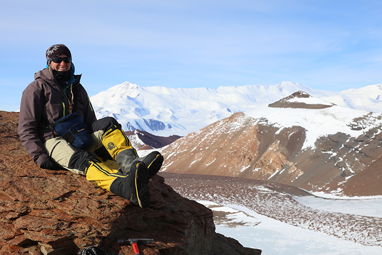

Students go to ends of the Earth to dig up climate history
By Sarah Vickery February 26, 2019 Science & Technology Water & Environment
Between 256 million and 335 million years ago, the landmasses of the Southern Hemisphere were squished together in a super continent called Gondwana. Gripped in the cold throes of an ice age, glaciers moved slowly across the landscape, churning up ground and leaving a trail of sediment in their wake. They retreated as the Earth warmed, transitioning from an icehouse to a greenhouse climate at the end of the Paleozoic Era.
Today, UWM geosciences students are studying those glacier trails, hoping to discover information about the past that might help us understand our warming climate in the present.
Nailing down the geologic record
Since about the 1960s, said distinguished professor of geosciences John Isbell, scientists have worked under the idea that Gondwana was covered by one giant glacier, buried under ice for over 100 million years.
But, he said, when studied in detail, the geology tells a different story. Drawing on research about ancient sea levels, Isbell determined that the late Paleozoic oceans were not gaining nor losing water volume on the scale that would be locked up in an expanding and shrinking massive ice sheet.
What we’re finding is that there are alternating 1 to 8 million-year intervals where there was ice, and 1 to 8 million-year intervals where there was less ice or no ice within that time frame,” Isbell said. “And that ice wasn’t fluctuating from a single ice center, but a whole bunch of smaller ice centers.
In fact, research shows that there were at least 22 ice sheets. Now Isbell and his students are trying to determine what might have happened to those glaciers and the landscape during those intervals.
We look at physical sedimentology – everything from the size and shape of a sand grain to the large-scale architecture of sandstones. That tells us about what the glaciers were like at that time,
graduate student Libby Ives said. Because these rocks are only preserved in certain places, we have to go to those places.
Understanding today’s climate change
This research is essential because the late Paleozoic ice age was the last time that the Earth transitioned from an “icehouse” to “greenhouse” conditions – a state marked by higher temperatures, plants growing at the north and south poles, with ice found only on mountaintops.
Today’s climate conditions seem remarkably similar. Just like the late Paleozoic ice house to greenhouse transition, an overabundance of carbon dioxide in the atmosphere seems to be leading to the shrinking of today’s ice caps. Isbell warns, though, that today the Earth is warming at an unprecedented rate.
Understanding the history of our planet is important to interpreting what’s happening in our present day,
Ives said. I took a wilderness first-responder course, and one of the things they drilled into our head was when trying to determine what is wrong with someone, you have to ask, ‘What’s normal for you?’ To understand the present state of our Earth and these large-scale (climate) trends, we need to know what was normal in the past.
That way, da Rosa added, we can start to make predictions about future climate change.
For instance, the ice house to greenhouse transition was followed by a mass extinction event when 90 percent of Earth’s species died out. The planet is in the midst of another mass extinction, Isbell said, and we should pay attention to the past to understand what might be in store should more carbon and greenhouse gases be released into the atmosphere.